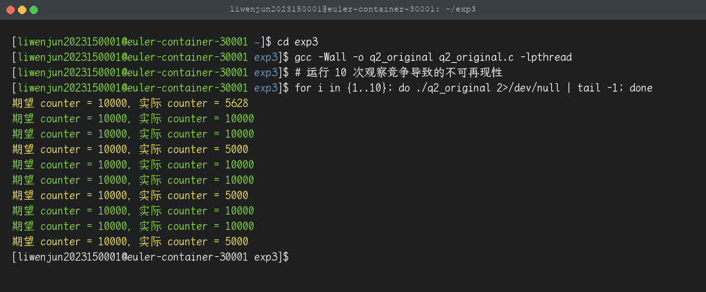
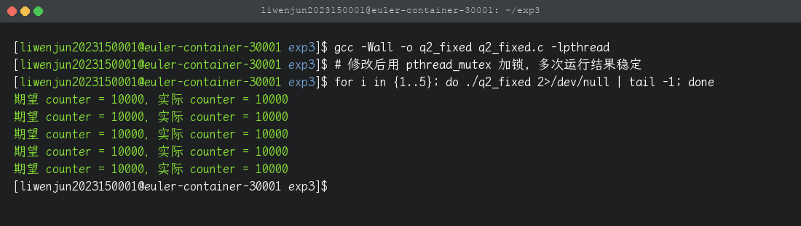
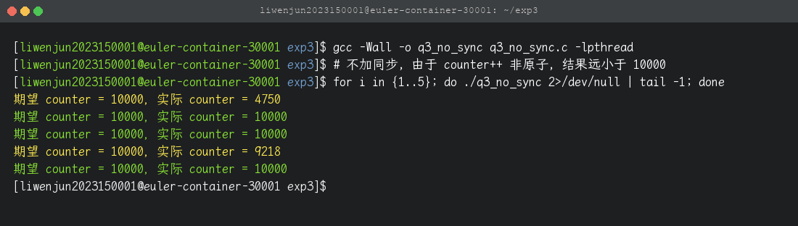
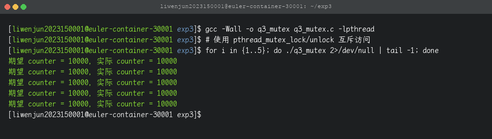
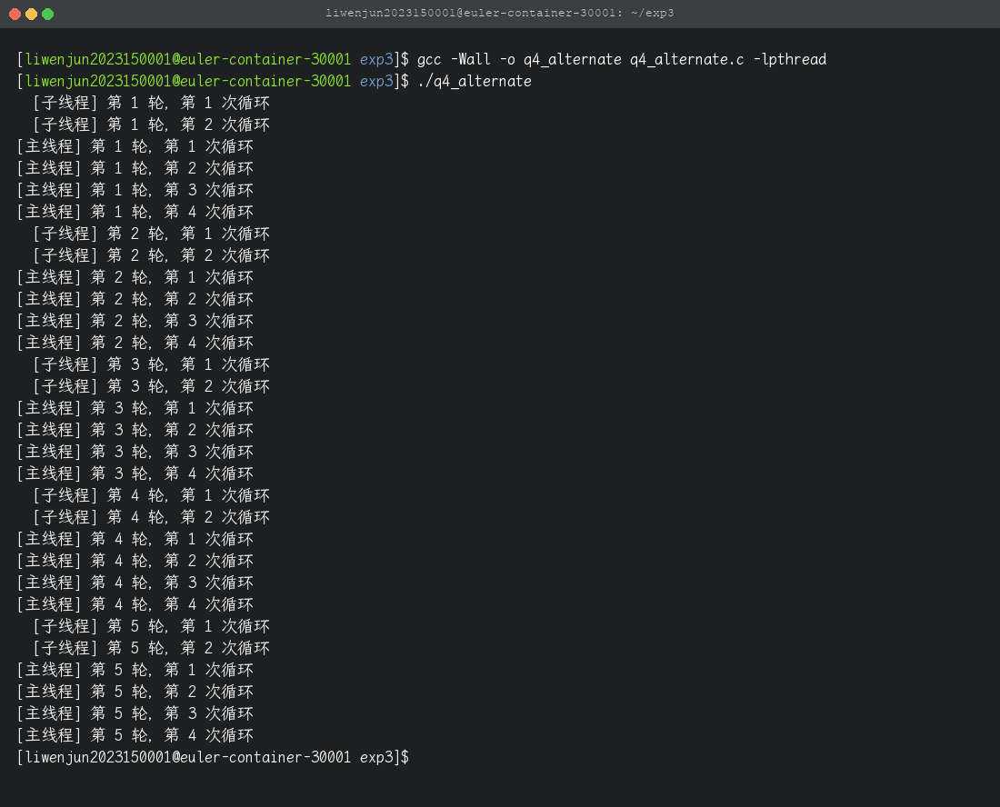
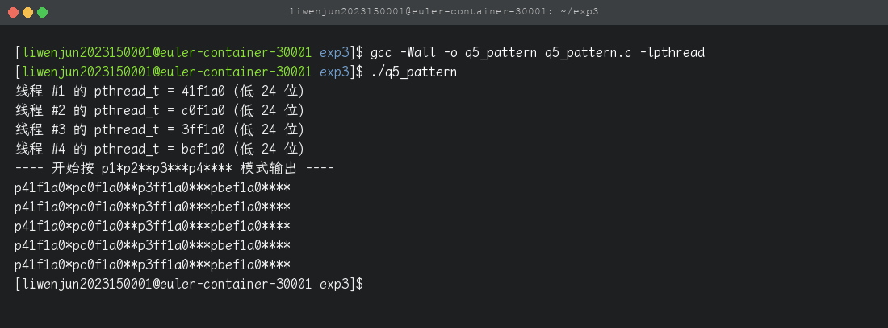

本次实验共有 5 道题，分为理论分析（1 题）与代码实现（4 题）。代码均基于 POSIX 线程库（pthread）与 POSIX 信号量（semaphore.h），编译指令统一为：
gcc -Wall -o <output> <source>.c -lpthread| 题号 | 类型 | 对应文件 | 核心要点 |
|---|---|---|---|
| 1 | 理论分析 | — （仅写入报告） | 判断 x=y / x++ / ++x / x=1 哪些需要同步 |
| 2 | 代码改写 | q2_original.c / q2_fixed.c | 分析图1非原子读改写并用 mutex 修复 |
| 3 | 代码实现 | q3_no_sync.c / q3_mutex.c / q3_sem.c | 三种实现对比：无锁（错）/ mutex / semaphore |
| 4 | 代码实现 | q4_alternate.c | 主线程 4 次 ↔ 子线程 2 次，交替 5 轮 |
| 5 | 代码实现 | q5_pattern.c | 4 线程按 p1*p2**p3***p4**** 模式输出 5 轮 |
~/Library/CloudStorage/OneDrive-个人(2)/Course/系统编程/实验/实验三 多线程编程/
├── 多线程编程(1).doc # 实验要求原始 doc
├── 多线程编程_李文俊_2023150001.docx # 最终实验报告（本次提交）
├── 进程间通信_李文俊_2023150001.docx # 实验报告样式模板（来自实验二）
├── 实验三_说明文档.html # 本文档
├── code/ # 全部源代码
│ ├── q2_original.c
│ ├── q2_fixed.c
│ ├── q3_no_sync.c
│ ├── q3_mutex.c
│ ├── q3_sem.c
│ ├── q4_alternate.c
│ ├── q5_pattern.c
│ └── figure_source.png # 从 .doc 抽取的 图1/图2 源代码图
└── snapshot/ # 所有终端运行截图
├── 01_q2_original_race.png
├── 02_q2_fixed.png
├── 03_q3_no_sync.png
├── 04_q3_mutex.png
├── 05_q3_sem.png
├── 06_q4_alternate.png
└── 07_q5_pattern.png实验在 Taishan/aarch64 + openEuler 容器（172.31.234.194）上完成，用户为 liwenjun2023150001，实验目录为 ~/exp3。代码与可执行文件均已上传：
$ ssh liwenjun2023150001@172.31.234.194
$ cd ~/exp3 && ls
q2_fixed q2_original.c q3_mutex.c q3_no_sync.c q3_sem.c q4_alternate.c q5_pattern.c
q2_fixed.c q3_mutex q3_no_sync q3_sem q4_alternate q5_pattern# 一次性上传所有源代码
cd "~/Library/CloudStorage/OneDrive-个人(2)/Course/系统编程/实验/实验三 多线程编程/code"
scp *.c liwenjun2023150001@172.31.234.194:exp3/
# 服务器上批量编译
ssh liwenjun2023150001@172.31.234.194 "cd exp3 && \
for f in q2_original q2_fixed q3_no_sync q3_mutex q3_sem q4_alternate q5_pattern; do \
gcc -Wall -o \$f \$f.c -lpthread; \
done"题目要求判断对 int 型变量 x 的下面 4 种操作哪些需要同步：
x = y;
x++;
++x;
x = 1;| 操作 | 是否需要同步 | 原因 |
|---|---|---|
x = y; | 需要 | 展开成 "load y → store x"，是两步操作。两步之间另一线程改 y、或同时写 x，结果都不可预测。 |
x++; | 需要 | 展开成 "load x → add 1 → store x" 的读-改-写三步。C 标准不保证 ++ 是原子指令，多线程并发会丢失更新。 |
++x; | 需要 | 与 x++ 原子性完全等价，区别只在表达式取值时机。 |
x = 1; | 一般不需要 | 只是把常量写入 x，没有读其它内存。对自然对齐的 int 单次写是原子的，无论谁先谁后结果都是 1。 例外：未对齐写、宽度大于平台原子宽度、需要保证可见性时仍需同步或 atomic。 |
题面 图 1 给出的是一个有数据竞争的累加程序（图像已抽取保存在 code/figure_source.png）。原始代码（带行注释）：
#include <stdio.h>
#include <stdlib.h>
#include <pthread.h>
#define NLOOP 5000
int counter; /* incremented by threads */
void *increase(void *vptr);
int main(int argc, char **argv) {
pthread_t threadIdA, threadIdB;
pthread_create(&threadIdA, NULL, &increase, NULL);
pthread_create(&threadIdB, NULL, &increase, NULL);
pthread_join(threadIdA, NULL);
pthread_join(threadIdB, NULL);
return 0;
}
void *increase(void *vptr) {
int i, val;
for (i = 0; i < NLOOP; i++) {
val = counter; /* ← 步骤①：读 */
printf("%x: %d\n", (unsigned int)pthread_self(), val+1);
counter = val + 1; /* ← 步骤②：写 */
}
return NULL;
}① 线程安全：步骤 ① 与步骤 ② 之间不是原子的，两个线程读到同一个旧值会导致丢失更新。
② 结果可见性：main 没有打印最终 counter，无法直观看到错误。
③ 打印格式：64 位平台上(unsigned int)pthread_self()会截断高 32 位。
修改要点：①在 increase() 外定义 pthread_mutex_t lock，把 val/printf/counter 三行整体锁起来；②main 末尾打印 counter；③把 %x + (unsigned int) 改为 %lx + (unsigned long)。完整代码：
#include <stdio.h>
#include <stdlib.h>
#include <pthread.h>
#define NLOOP 5000
int counter = 0;
pthread_mutex_t lock = PTHREAD_MUTEX_INITIALIZER;
void *increase(void *vptr);
int main(int argc, char **argv) {
pthread_t threadIdA, threadIdB;
pthread_create(&threadIdA, NULL, &increase, NULL);
pthread_create(&threadIdB, NULL, &increase, NULL);
pthread_join(threadIdA, NULL);
pthread_join(threadIdB, NULL);
pthread_mutex_destroy(&lock);
printf("期望 counter = %d，实际 counter = %d\n", 2*NLOOP, counter);
return 0;
}
void *increase(void *vptr) {
int i, val;
for (i = 0; i < NLOOP; i++) {
pthread_mutex_lock(&lock);
val = counter;
printf("%lx: %d\n", (unsigned long)pthread_self(), val+1);
counter = val + 1;
pthread_mutex_unlock(&lock);
}
return NULL;
}gcc -Wall -o q2_original q2_original.c -lpthread
gcc -Wall -o q2_fixed q2_fixed.c -lpthread
# 运行原程序 10 次, 观察结果在 5000 / 10000 / 5xxx 之间跳变
for i in {1..10}; do ./q2_original 2>/dev/null | tail -1; done
# 运行修改后程序 5 次, 结果稳定为 10000
for i in {1..5}; do ./q2_fixed 2>/dev/null | tail -1; done

题目要求两个线程各对共享 counter 自增 5000 次，期望 counter = 10000。先做一个无同步的基线版本演示不可再现性，再分别用 mutex 和 semaphore 修复。
#include <stdio.h>
#include <pthread.h>
static long counter = 0;
static void *worker(void *arg) {
for (int i = 0; i < 5000; ++i)
counter++; /* 读-加-写 三条指令, 非原子 */
return NULL;
}
int main(void) {
pthread_t a, b;
pthread_create(&a, NULL, worker, NULL);
pthread_create(&b, NULL, worker, NULL);
pthread_join(a, NULL); pthread_join(b, NULL);
printf("期望 counter = 10000，实际 counter = %ld\n", counter);
return 0;
}编译与运行：
gcc -Wall -o q3_no_sync q3_no_sync.c -lpthread
for i in {1..5}; do ./q3_no_sync | tail -1; done
# 实际 counter 经常 != 10000, 例如 4750, 9218, ...
#include <stdio.h>
#include <pthread.h>
static long counter = 0;
static pthread_mutex_t lock = PTHREAD_MUTEX_INITIALIZER;
static void *worker(void *arg) {
for (int i = 0; i < 5000; ++i) {
pthread_mutex_lock(&lock);
counter++;
pthread_mutex_unlock(&lock);
}
return NULL;
}gcc -Wall -o q3_mutex q3_mutex.c -lpthread
for i in {1..5}; do ./q3_mutex | tail -1; done
# 5 次都是 10000
#include <stdio.h>
#include <pthread.h>
#include <semaphore.h>
static long counter = 0;
static sem_t sem;
static void *worker(void *arg) {
for (int i = 0; i < 5000; ++i) {
sem_wait(&sem); /* P 操作 */
counter++;
sem_post(&sem); /* V 操作 */
}
return NULL;
}
int main(void) {
pthread_t a, b;
sem_init(&sem, 0, 1); /* 0=线程内共享, 1=资源可用 (二元信号量) */
pthread_create(&a, NULL, worker, NULL);
pthread_create(&b, NULL, worker, NULL);
pthread_join(a, NULL); pthread_join(b, NULL);
sem_destroy(&sem);
printf("期望 counter = 10000，实际 counter = %ld\n", counter);
return 0;
}gcc -Wall -o q3_sem q3_sem.c -lpthread
for i in {1..5}; do ./q3_sem | tail -1; done| pthread_mutex | POSIX semaphore | |
|---|---|---|
| 语义 | 互斥锁（有所有者） | 资源计数（无所有者） |
| 解锁限制 | 只能由加锁线程解锁 | 任意线程可 post |
| 用法 | 纯互斥 | 互斥（初值 1）+ 同步（初值 N） |
| 开销 | 稍低 | 略高（含系统调用路径） |
| 本题适合 | 更贴合语义 | 等价可用 |
需求：子线程循环 2 次 → 主线程循环 4 次 → 再回到子线程 2 次 …… 共 5 轮。
使用 "互斥锁 + 条件变量 + turn 标志" 实现：
turn = 0：子线程跑；turn = 1：主线程跑。turn 并 pthread_cond_broadcast 唤醒对方。while (turn != …) 防止虚假唤醒。static void *child(void *arg) {
for (int r = 0; r < ROUNDS; ++r) {
pthread_mutex_lock(&lock);
while (turn != 0) pthread_cond_wait(&cond, &lock);
for (int i = 0; i < 2; ++i)
printf(" [子线程] 第 %d 轮，第 %d 次循环\n", r+1, i+1);
turn = 1;
pthread_cond_broadcast(&cond);
pthread_mutex_unlock(&lock);
}
return NULL;
}gcc -Wall -o q4_alternate q4_alternate.c -lpthread
./q4_alternate
需求：开启 4 个线程 p1~p4，每线程把自己的真实 pthread_t 打印 5 次，整体输出严格按 p1*p2**p3***p4**** 模式。
同样使用 "互斥锁 + 条件变量 + turn"，区别在于 turn 有 4 个值，每个线程做完后 turn = (turn + 1) % 4。
static void *worker(void *arg) {
thread_arg_t *t = arg;
for (int r = 0; r < ROUNDS; ++r) {
pthread_mutex_lock(&lock);
while (turn != t->idx) pthread_cond_wait(&cond, &lock);
printf("p%lx", (unsigned long)t->tid & 0xFFFFFFul);
for (int s = 0; s <= t->idx; ++s) putchar('*');
if (t->idx == NTHREAD - 1) putchar('\n');
turn = (turn + 1) % NTHREAD;
pthread_cond_broadcast(&cond);
pthread_mutex_unlock(&lock);
}
return NULL;
}pthread_t 在 64 位 Linux 是 8 字节，直接打印太长，取低 24 位（与 ID 增量大小相当）便于阅读。
gcc -Wall -o q5_pattern q5_pattern.c -lpthread
./q5_pattern
在服务器 ~/exp3 目录下：
# 编译全部
for f in q2_original q2_fixed q3_no_sync q3_mutex q3_sem q4_alternate q5_pattern; do
gcc -Wall -o $f $f.c -lpthread
done
# 题1: 理论, 无代码
echo "题2: 原程序 10 次"
for i in {1..10}; do ./q2_original 2>/dev/null | tail -1; done
echo "题2: 加锁后 5 次"
for i in {1..5}; do ./q2_fixed 2>/dev/null | tail -1; done
echo "题3: 无同步 5 次 (常出错)"
for i in {1..5}; do ./q3_no_sync | tail -1; done
echo "题3: mutex 5 次 (稳定 10000)"
for i in {1..5}; do ./q3_mutex | tail -1; done
echo "题3: semaphore 5 次 (稳定 10000)"
for i in {1..5}; do ./q3_sem | tail -1; done
echo "题4: 交替循环"
./q4_alternate
echo "题5: 模式输出"
./q5_patternundefined reference to pthread_create必须加 -lpthread，并放在源文件之后，例如：
gcc -Wall -o q3_mutex q3_mutex.c -lpthread # 正确
gcc -Wall -lpthread -o q3_mutex q3_mutex.c # 部分链接器顺序敏感, 可能失败无同步并不意味着每次都错——只是结果不可再现。Linux 调度和 CPU cache 偶尔会让两个线程几乎串行执行，从而得到正确结果。多跑几次（5~10 次）一定会观察到偏差。
原程序的临界区里有 printf，I/O 系统调用大概率把另一线程切换出去，竞争窗口被 I/O 拉长但单点冲突反而减少。这本身也是非原子操作的一种典型现象——加上锁就稳定了。
aarch64 上的 pthread_t 是 8 字节指针，%lu 输出 18 位以上数字。可以用 (unsigned long)tid & 0xFFFFFFul 取低 24 位（不同线程低位差异很大，足够区分），或者用 %lx 改为十六进制。
这是因为创建子线程后立即 printf("线程 #%d 的 pthread_t = …")，主线程和子线程同时输出，顺序无保证。我把这个 "宣告" 阶段放在 puts("---- 开始 ----") 之前，再让 4 个 worker 严格按 turn 顺序输出，整体看起来就是 "宣告 → 分隔线 → 严格模式输出"。